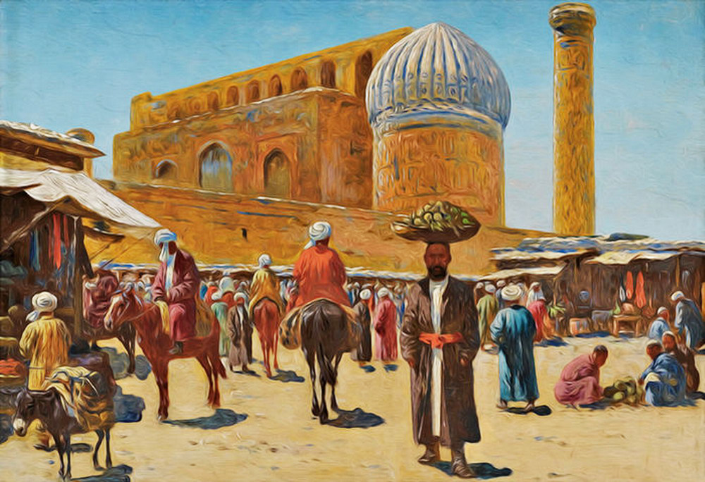
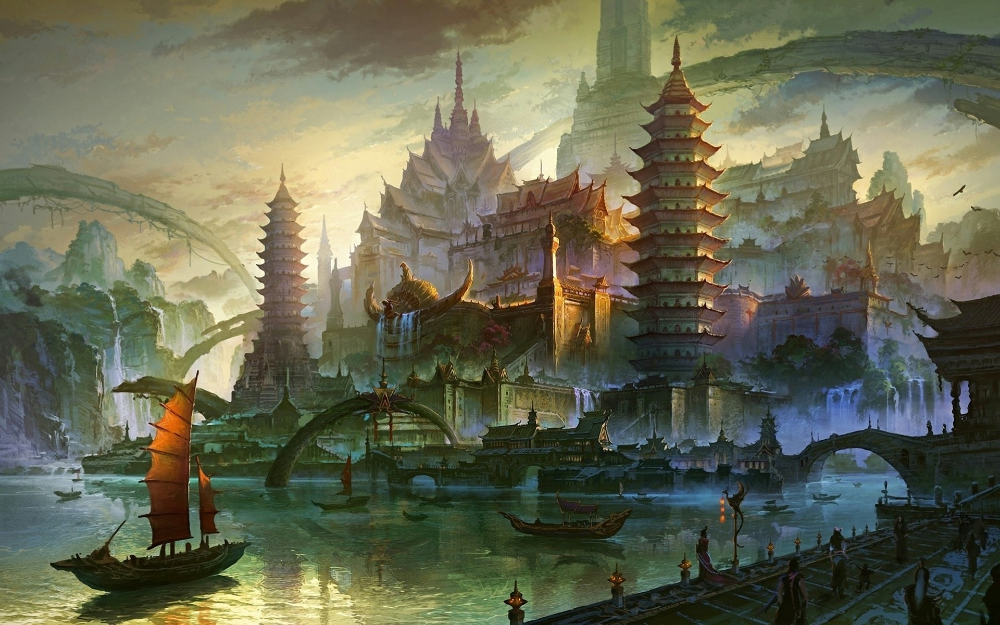
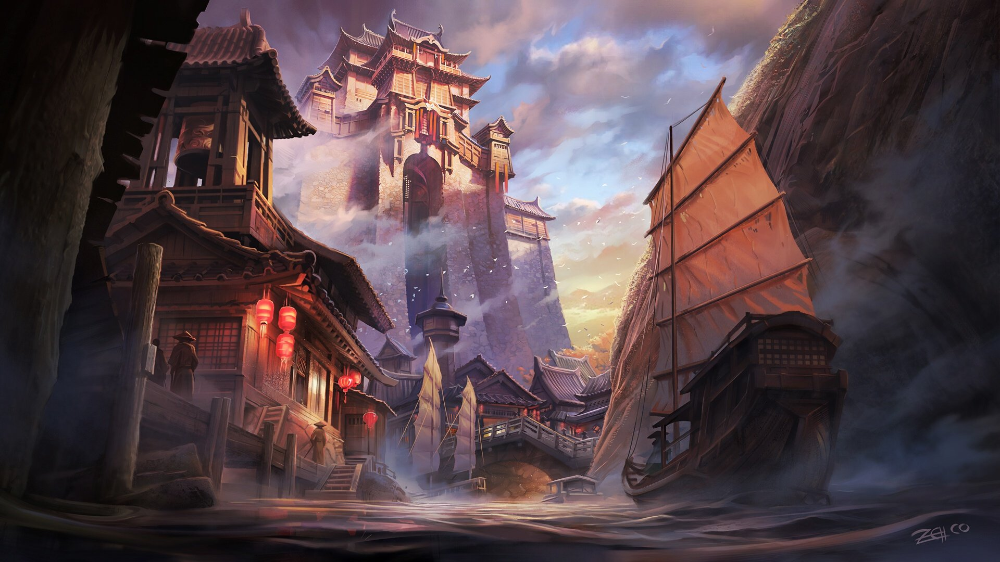
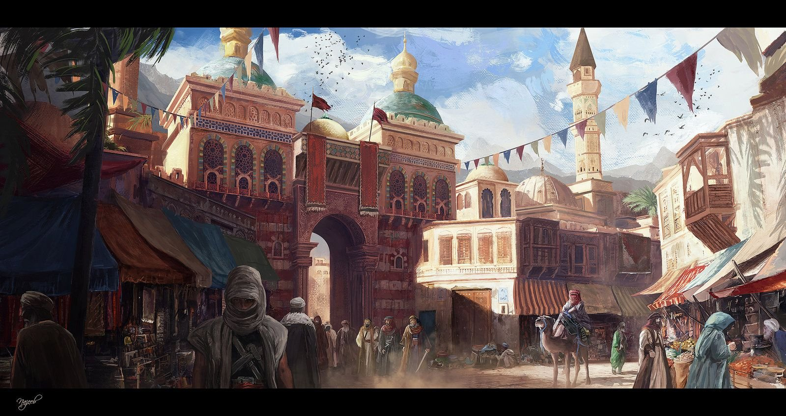
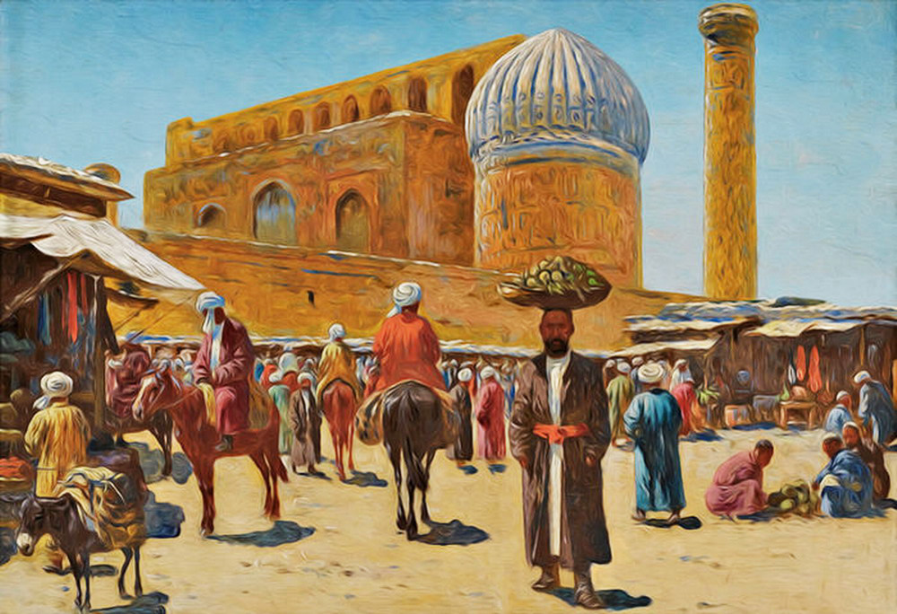
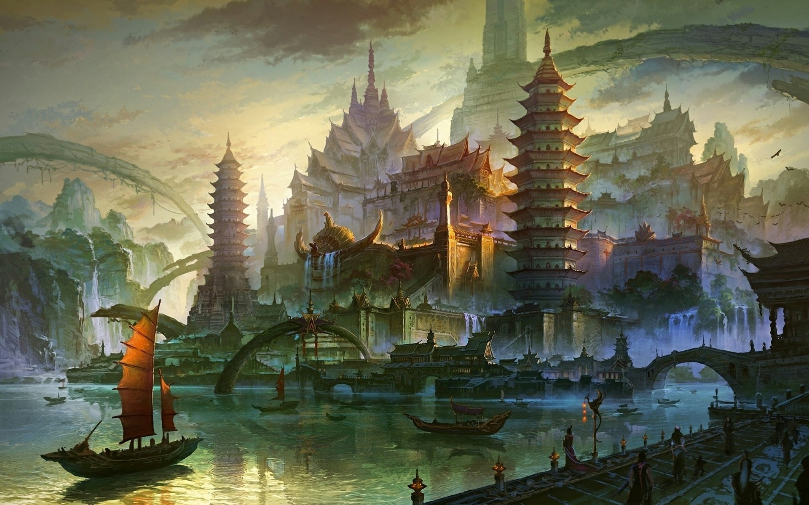
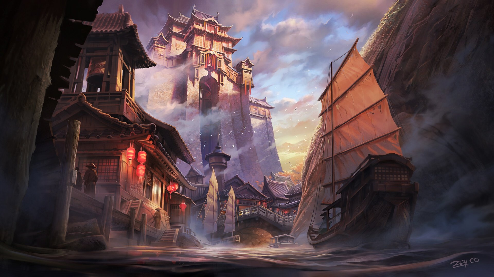
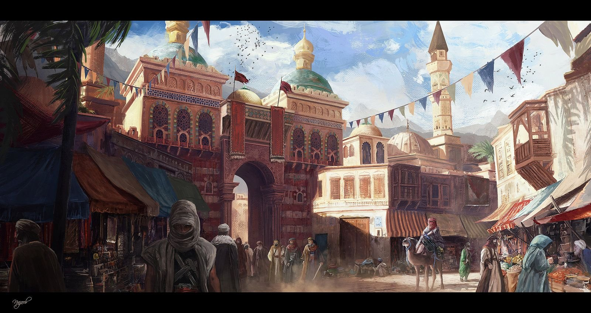

Страны Востока в разное время перешли к периоду средневекового развития. Это объясня- ется тем, что разные страны были на разном уровне развития производства. Созданные как административные центры или военные крепости, средневековые города быстро развивались по мере развития ремесел и торговли. Крупнейшими азиатскими городами были Чанъань, Лоян, Ханчжоу, Камакура, Киото, Осака, Дели, Багдад, Бухара и Самарканд. Здесь были созданы школы и библиотеки, жили и работали ученые, поэты, художники и музыканты. В отличие от европейских азиатские города формировались на государственных землях, им не пришлось бороться против крупных землевладельцев. В Китае – одном из крупнейших государств Азии – возникновение и развитие средневековых городов пришлось на IX-XIII века. Китайские города подчинялись императору. Развитию городов препятствовали захватнические войны. Например, Индия и ее города в Средние века не раз подвергались нападениям чужеземных захватчиков. Средневековые города в Японии возникли вокруг буддийских храмов и крепостей, у дорог и станций связи, на побережье моря. В 1177 году город Хэйян был уничтожен пожаром. На его месте был построен новый город, который получил название Киото и стал столицей страны. На протяжении многих веков город был экономическим, культурным и религиозным центром Японии.

Азиатские города прошли собственный путь развития. В Китае, например, в XI веке на высоком уровне было развито градостроительство. Императоры и дворяне строили роскошные дворцы. Из-за нехватки древесины при строительстве широко применялись кирпич, глина и камень. В отличие от Западной Европы в крупных городах Китая было хорошо налажено бытовое обслуживание. По керамическим трубам население обеспечи- валось чистой водой, город очищался от мусора, работали пожарные службы. Население азиатских городов, в отличие от европейских, было более многочисленным. В частности, китайские города в Средневековье были очень густонаселенными. Города Бухара и Самарканд были экономически и политически важными центрами восточного мира. Бухара была известна на Востоке как один из центров исламской религии, культуры, торговли и ремесленничества. Именно поэтому правящие династии Средней Азии выбирали эти города в качестве своих административных центров. Города мусульманских стран Средней Азии строились по общему плану: в центре арка – крепость главы города, вокруг которой располагался шахри- стан – гузары, где проживало основное население. Вокруг города находился рабад – ремесленнические гузары. В восточном градостроительстве основными строительными материалами были камень и кирпич. Правители и богачи стро- или свои дворцы и дома из жженного кирпича и мрамора, а бедняки – жилье из пахсы. Дома бедняков были недостаточно крепкими и нуждались в постоянном ремонте. Унаследованные дома обычно сносили и строили на их месте новые.

Восточные ремесленники производи- ли шелковые ткани и большую часть украшений для продажи за границу. В Азии и Северной Африке объединения ремесленников возникли одновременно с городами. На Востоке жители городов изначально были освобождены от налогов. Со временем купцов и ремесленников стали облагать различными налогами. В Арабском Халифате, Японии и Китае с мастеров и торговцев налоги собирали старшины цехов. В Китае принадлежность к цехам была обязательной для всех мастеров. Расположенные на перекрестке Вели- кого шелкового пути города Средней Азии были транзитными центрами торговли. Иностранные купцы высоко ценили самар- кандскую бумагу и ткани, гиждуванскую керамику, ткани и одежду мервских масте- ров.

Появление таких крупных централизованных государств, как Арабский халифат и Империя Тан, сделало торговлю источником высокого дохода. Торговля не ограничивалась караванными путями, которые проходили от Даль- него Востока до Средиземноморья. Десятки кораблей арабских, индийских и китайских купцов плавали по Персидскому заливу и Красному морю. В отличие от Азии, экономическая отсталость Африки и непрекращающиеся войны сделали континент источником сырья, соли, золота, слоновой кости, пряностей и иногда рабов. Азиатские же рынки были многолюдны и суетливы. Средневековые рынки располагались, как правило, у городских ворот. В самом городе были небольшие базары, на которых продавалась определенная продукция. Крупные рынки Средней Азии и Ирана были разделены на несколько торговых рядов. Каждый ряд объединял торговцев или ремесленников, занимающихся тем или иным видом товаров. В раннем Средневековье в Багдаде, Севилье и Гранаде существовали рынки наемных рабочих. На восточных рынках также располагались ремесленные мастерские и торговые лавки. Существовали и передвижные рынки. Здесь собирались странствующие торговцы и жители окрестных деревень, которым необходимо было продать свою продукцию.